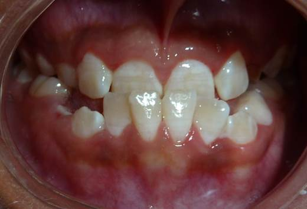
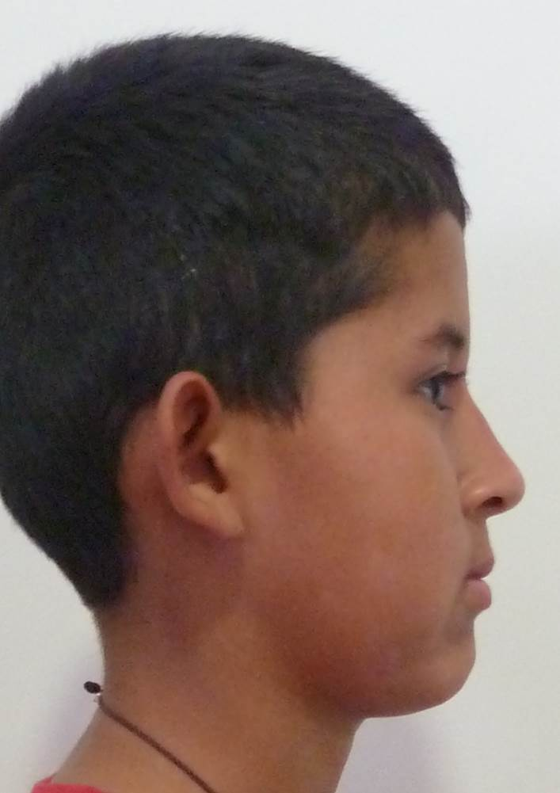

Vista dental


CASO CLÍNICO · ORTOPEDIA MAXILAR
Caso clínico real de ortopedia maxilar durante el crecimiento. El tratamiento busca favorecer una relación más adecuada entre los maxilares y mejorar la función de la mordida de acuerdo con el diagnóstico individual.



TRATAMIENTO DURANTE EL CRECIMIENTO
La ortopedia maxilar puede aprovechar etapas de crecimiento para guiar el desarrollo de los maxilares y favorecer una mordida más funcional. La indicación, el momento de inicio y los objetivos del tratamiento dependen de la valoración clínica de cada paciente.
Las imágenes corresponden a un caso clínico real. Los resultados pueden variar según las condiciones, el diagnóstico, la etapa de crecimiento y las necesidades de cada paciente.